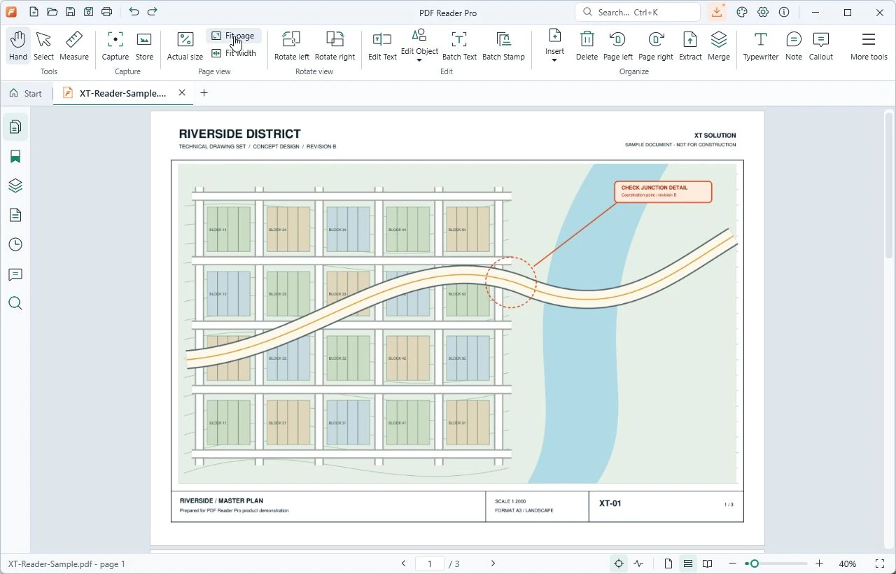

Trao đổi với XT
Gửi email kèm mã yêu cầu hoặc ảnh lỗi để chúng tôi kiểm tra. Không gửi mật khẩu.
contact@xt-solution.dev ↗License, máy tính và những lần gia hạn.
Tất cả trong một không gian riêng.

Giao diện ứng dụng thật · Tài liệu mẫu XT Solution
License, thiết bị và hỗ trợ. Tất cả ở đây.
Kiểm tra license, tải Reader và mở tài liệu đầu tiên của bạn.
Tải ứng dụng WindowsPhiên bản chính thức từ XT↗Mở About → Manage license → Check again khi có mạng để nhận hạn sử dụng mới.
Quản lý các máy đã kích hoạt Reader bằng tài khoản này.
Gỡ máy sẽ giải phóng một vị trí. Token ngoại tuyến trên máy cũ có thể còn hiệu lực tối đa 7 ngày; máy đó cần đăng nhập lại để kích hoạt.
Gửi nhu cầu, nhận tư vấn và theo dõi kết quả ngay trong tài khoản.
Chọn thời hạn mong muốn. XT sẽ xác nhận thông tin thanh toán trước khi cấp license.
Theo dõi mua mới, gia hạn và trao đổi với XT.
Tài khoản dùng chung cho website và ứng dụng Reader.
Cần đổi thông tin tài khoản? Liên hệ contact@xt-solution.dev để XT hỗ trợ xác minh.
Liên hệ hỗ trợ ↗Chọn cách phù hợp để tiếp tục công việc của bạn.
Gửi email kèm mã yêu cầu hoặc ảnh lỗi để chúng tôi kiểm tra. Không gửi mật khẩu.
contact@xt-solution.dev ↗Tải bản chính thức, xem nội dung cập nhật và các bước bắt đầu với Reader.
Mở trang tải xuống →Token đã xác minh dùng ngoại tuyến tối đa 7 ngày, trong giới hạn hạn license. Kết nối lại khi ứng dụng yêu cầu.